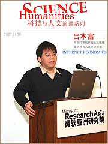

新闻主页 » 科技新闻
网络经济，谁主沉浮？
2016-10-02 17:00:23

中国科学院研究生院教授吕本富博士在微软亚洲研究院科技与人文演讲系列中，以《网络经济发展的路径》为题，生动描述了目前流行的长尾理论以及典型的长尾现象。吕教授是中国培养出来的第一个网络经济学博士，同时也是著名的IT评论家。下面，让我们一起来分享一下吕本富教授在演讲中的部分内容。 一．IT产业的转型 在2000年的网络经济高潮中，起主导作用的是厂商。大公司的IT投资为网络经济贡献了现金流和利润，由信息化带动了网络经济的兴起和兴盛。然而，现在的世界各大厂商在信息化方面的投资逐渐减少。这主要是因为它们的信息基础建设基本完成，不可能再持续投资下去了。取而代之的是，硬件和软件产业逐渐让位给以网络为核心的商业形态，以厂商为主导的网络经济已经转变成以消费者为主导。这其中，就产生了两大金矿：一个是网络信息资源“金矿”；另一个则是网络人际关系圈“金矿”。在新转型后的网络经济中，如果一个公司想继续成为霸主，那么必须符合两个条件：第一，一定要符合网络经济本身发展的规律。第二，一定要跟草根相联系。比如说IBM, 它现在基本不跟草根联系了，甚至把它的笔记本也卖了，就只能回缩到和Oracle一样去细分市场了。所以，从目前的发展格局而言，能在IT业和网络经济同时进入主流的，微软是其中毋庸置疑的一家公司。 从用户的角度而言，消费者也逐渐从网民转向网商。从统计数据表明，中国目前拥有1亿以上的网民，5千万左右的网友，以及大概1千万的网商。简单地说，网民是贡献眼球的，网友是贡献内容的，而网商则是获得价值的。从网民到网商，网络经济给许多人带来了实际的价值，于是就摆脱了泡沫经济的帽子。因为价值的产生，就意味着泡沫的不复存在。 从聚合角度而言，Web1.0已经过渡到了Web2.0的时代。技术创新主要围绕着“资源聚合”进行。Web1.0主要实现了信息的聚合，使互联网成为了一个巨大的媒体。而Web2.0则实现了网友之间的互动，互联网成为了一个原创信息的平台，它主要通过博客 (Blog), 交友 (SNS), 定制 (RSS), 知识社区 (Wiki) 等形式组合而成。从Web1.0到Web2.0，网络经济的商业模式发生了本质的变化，Web2.0已经成为网络经济创新的源泉。草根文化变成了互联网的主流，为新一代的创业者提供了发展平台。 二．长尾理论及其关照 美国《Wired》杂志主编Chris Anderson提出了时下流行的长尾理论（Long Tail），与互联网相关的一系列现象好像如法炮制都能扯上一些长尾的说法。大家看上面的图示，红色部分表示处于20%的传统大客户，我们将它比喻成西瓜；竞争激烈，成为红海；蓝色部分是处于80%的中小客户；我们将它比喻成芝麻；聚沙成塔，成为蓝海。互联网就是将蓝色部分变成自己的长尾，聚沙成塔，完成了传统经济下无法聚集的功能。那么这其中的关键就在于，如何降低捡芝麻的交易成本，以网络平台和网络的聚合效应提供成功的可能。举例来说，美国有两个网站，一个是Rhapsody这个网站，另一个是MP3网站。MP3坚持的是纯草根路线，不跟任何一个唱片公司签约，只顾尾巴，所以不久就倒闭了。而Rhapsody网站签了20％的像周杰伦这样的大牌明星，剩下的80％是草根，反而取得了成功。由此我们可以看出，在网络经济条件下，头和尾，并不是对立的，完全对立就会失败。同时，蓝的部分确实是越来越重要，红和蓝，就如同西瓜和芝麻的关系。在传统条件下，大家都抢红的西瓜，你捡我也捡，把西瓜捡成了红海。反而，那80%的芝麻过去是没人要的，甚至有人认为它不存在。其实把芝麻加起来的价值也很大，问题就在捡一粒芝麻的交易成本过高。互联网带给我们的好处就是降低捡芝麻的成本，把每一次弯腰捡芝麻的成本进行削减。 我们一起来看看Google是如何成为长尾的。 Google过去20%的大广告客户，面临着门户网站、电视台等媒体打家的竞相争抢，广告商之间的竞争愈演愈烈。后来，Google提出了通过自动填表成为广告客户的营销模式，几乎不存在什么交易成本，于是捡芝麻的成本降低，Google聚沙成塔，变成了一个巨无霸。这也说明了网络经济由厂商时代变成消费者时代的道理。 不仅仅是Google,还有很多公司的成功都符合长尾理论。那么究竟什么情况下能够形成长尾呢?吕本富教授总结出了三条法则：第一，应有尽有（Make Everything Available）。只要是在Web2.0的平台之下，消费者需要的信息，都能找到，这是第一个基本原则。比如亚马逊网站提供的几万种图书目录，就是一个很好的资源或信息聚合的例子。第二，关联推荐(Help Me Find It)。畅销的头部带动非畅销的尾部。比如说，易中天教授现在很火，于是连他十年前未成名的书也火了起来。这就是用畅销的部分带动非畅销的部分，形成了需求聚合，把细小的需求和流行的需求聚合放在一起。第三，半价服务，或者称降低摩擦(Cut the Price in Half, then Lower It)。通过互联网把本来稀缺而昂贵的东西实现廉价，通过减少物流与库存环节而降低成本。以上所述的三条原则，资源聚合、需求聚合、降低成本，基本描述了长尾理论的基本概?
» 新闻点评